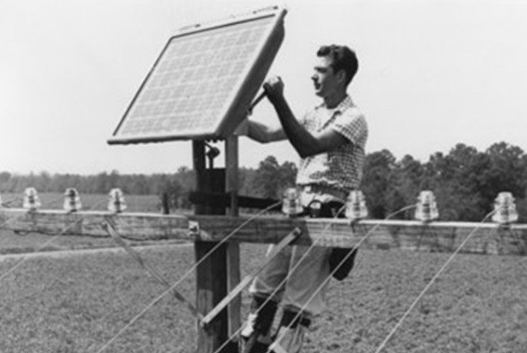

1950–1980: Los primeros pasos de la energía solar
En esta era, los paneles solares pasaron de ser un experimento científico a una tecnología viable. En 1954, Bell Labs desarrolló la primera célula fotovoltaica práctica de silicio, con un 6% de eficiencia, marcando el inicio de la energía solar moderna. En 1958, la NASA utilizó paneles en el satélite Vanguard I, demostrando su potencial en aplicaciones espaciales. Durante los años 60 y 70, la eficiencia mejoró del 8% al 14%, gracias a empresas como Hoffman Electronics, y se inició la producción comercial, aunque los costos seguían siendo altos (≈$100 por vatio). La crisis energética de los 70 impulsó la investigación, con avances como las células de película delgada (1976) y la creación del Solar One, el primer edificio alimentado por energía solar híbrida (1973)

Panel solar en 1950
Panel solar en 1960

Panel solar en 1980